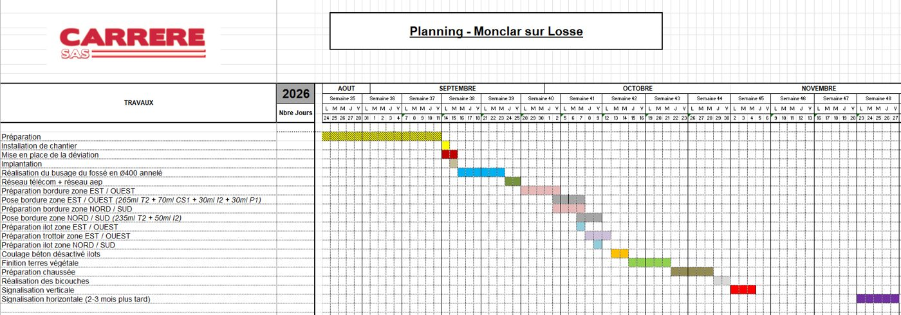
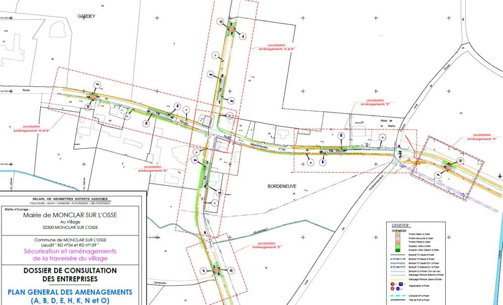
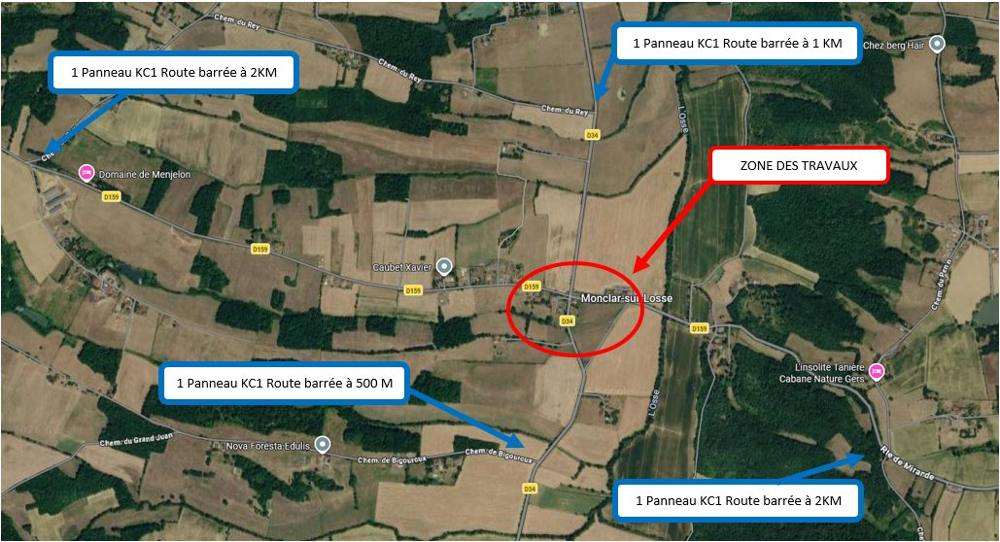
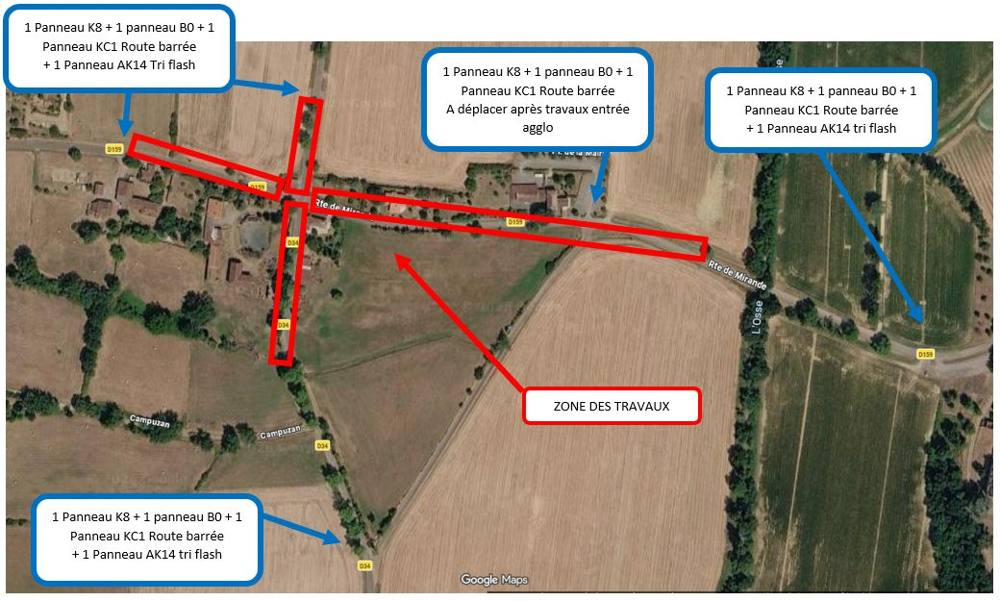
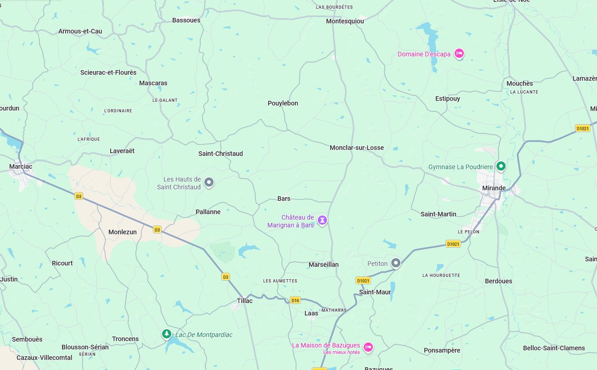
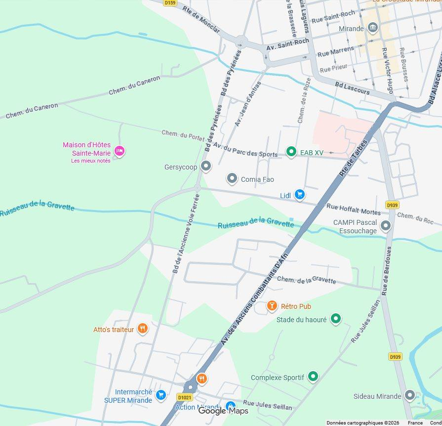

La commune sécurise la traversée du village au carrefour des RD 34 et RD 159 de septembre à novembre 2026. Habitants de Bars, Pouylebon, Saint-Christaud et des villages voisins : indiquez votre point de départ, votre destination, la date et votre véhicule pour connaître l'itinéraire adapté.
Trouver mon itinéraireL'outil tient compte du planning du chantier (fermeture partielle ou totale du carrefour), de la limite de 9 t sur la voie communale de traverse et du type de véhicule. Les itinéraires sont indicatifs : la signalisation en place sur le terrain prévaut toujours.
Planning prévisionnel établi par l'entreprise CARRERE SAS (mis à jour le 4 septembre 2026). Il peut évoluer selon la météo et l'avancement du chantier.

Le carrefour des RD 34 (Montesquiou – Bars) et RD 159 (Marciac – Mirande) est le cœur du village : mairie, école, arrêt du transport scolaire. Les vitesses d'approche élevées et l'absence de trottoirs rendaient la traversée dangereuse pour les piétons. L'aménagement resserre les voies, crée des trottoirs et des îlots et instaure une zone à 30 km/h.

Les véhicules de plus de 9 t (camions, autocars, transport scolaire) doivent suivre la déviation par les routes départementales. Les engins agricoles ne sont pas concernés par cette limite.
Pendant la fermeture du carrefour, la circulation locale contourne la zone de travaux par les voies communales : la voie communale de traverse entre la RD 159 (côté mairie) et la RD 34 (côté sud), et le Chemin du Rey entre la RD 34 (1 km au nord) et la RD 159 (2 km à l'ouest). Ces voies sont étroites : roulez au pas et facilitez les croisements.
Selon votre trajet, la déviation par les départementales (Pallanne, Saint-Maur, Estipouy…) peut rester plus rapide : l'outil d'itinéraire compare les deux.
La déviation est assurée par les routes départementales :
Les panneaux KC1 « Route barrée à … » sont placés aux derniers carrefours permettant de faire demi-tour ou de bifurquer (voir tableau ci-dessous).




| Emplacement | Signalisation |
|---|
L'accès des riverains, des secours et des services (collecte, livraisons) est maintenu dans la mesure du possible, selon la zone de travaux en cours. En cas de difficulté, adressez-vous au chef de chantier sur place ou à la mairie.
Pendant la fermeture du carrefour, les circuits de transport scolaire empruntent la déviation par les routes départementales (véhicules de plus de 9 t). Les horaires et points d'arrêt provisoires sont communiqués par le transporteur et affichés en mairie.
La zone de travaux est interdite aux piétons hors cheminements balisés. À l'issue du chantier, des trottoirs, des passages piétons et une zone 30 sécurisent l'accès à la mairie et à l'école.
Les informations de cette page sont mises à jour par la mairie à partir des documents du chantier.
La limite de 9 t sur la voie communale de traverse protège une chaussée qui n'est pas dimensionnée pour les poids lourds. Elle ne s'applique pas aux véhicules agricoles. Merci de la respecter : elle sera contrôlée.